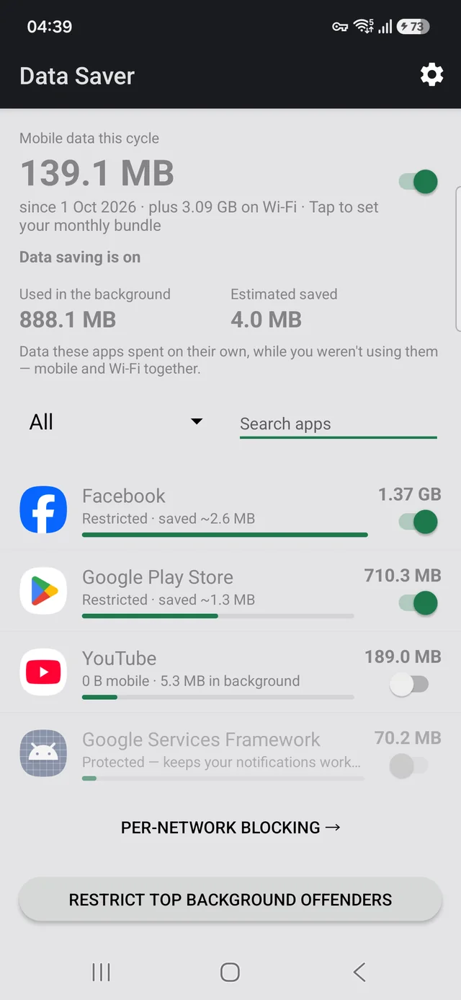

Data Saver
See which apps spend your mobile data in the background — and stop them.
Your phone tells you how much data you used. It does not tell you which app is the problem, and it will not stop it for you. Data Saver does both, in the same place: every app ranked by what it used this billing cycle, split into what you spent and what the app spent on its own while you were doing something else. Restrict any app straight from the row showing its usage.
You can decide that per network — block an app on mobile data and leave it working normally on Wi-Fi, which on a metered bundle is usually what you actually want, since only one of the two costs you anything.
This app has no INTERNET permission. Not “we promise
not to” — it is absent from the manifest, so Android will not let the app open
a network connection at all. No accounts, no analytics, no crash reporting, no servers, no
ads. The figures come from counters Android already keeps on your device.
The source is public, so you can check that claim rather than believe it.
Get it
The APK on GitHub is signed by us and every release carries its SHA-256 checksum and the signing fingerprint, so you can verify the download before you trust it. Google re-signs what it distributes, so the two builds have different signatures and a phone will take one or the other — pick a channel and stay on it. F-Droid inclusion is requested and not yet granted.
Checking the central claim for yourself takes one command:
aapt dump permissions DataSaver-v0.8.apkSix lines come back, and INTERNET is not among them.
Your notifications keep working
Notifications on Android are delivered by Google Play Services, not by each app’s own connection. Restrict the wrong thing and every notification on your phone stops — messages, mail, calls. Data Saver will not let you do that by accident: Google Play Services, your dialler and your messaging app are protected and clearly marked.


Working out where your data went
You do not need this app to find the answer, and none of these ask you to install anything to read them.
- Which app is using your mobile data — where Android hides the figures, and the billing-cycle default that makes the screen answer the wrong question
- How to stop apps using data in the background — three ways, and the one switch that silences every notification on your phone
- Why your bundle runs out before the month does — the daily arithmetic, and which half of your usage is worth cutting
- Samsung Max was discontinued — what it actually did, the dead VPN profile it leaves behind, and which parts of it still need replacing
- Block an app on mobile data but keep it on Wi-Fi — the switch Android does not have, why a blocker needs VPN permission, and the one-VPN-at-a-time limit
- Why the Play Store eats your mobile data — usually the biggest consumer on the phone, and the one setting that stops it without leaving you unpatched
Links
- Privacy policy
- Source code on GitHub
- Report a problem or request a feature
- anubisproductions.studio@gmail.com
Requires Android 7.0 or later. Works offline. Free, and licensed under the GPL-3.0.